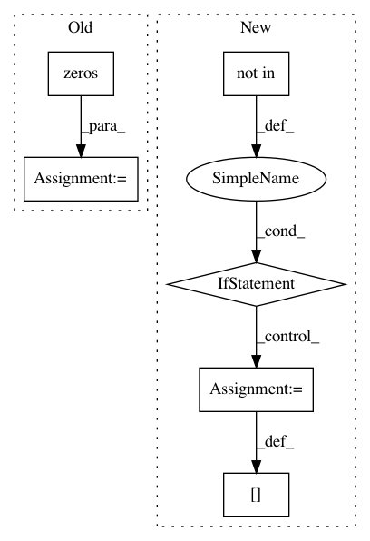

9e2a150b630e08a7037c1fd19e01cd5206e84a24,torch_geometric/transforms/grid_sampling.py,GridSampling,__call__,#GridSampling#Any#,22
Before Change
if torch.is_tensor(item) and item.size(0) == num_nodes:
if key == "y":
one_hot = torch.zeros((item.shape[0], self._num_classes))\
.scatter(1, item.unsqueeze(-1), 1)
aggr_labels = scatter_add(one_hot, pool, dim=0)
data[key] = torch.argmax(aggr_labels, -1)
else:
After Change
def __call__(self, data):
num_nodes = data.num_nodes
if "batch" not in data:
batch = data.pos.new_zeros(num_nodes, dtype=torch.long)
else:
batch = data.batch
cluster = voxel_grid(data.pos, batch, self.size, self.start, self.end)
cluster, perm = consecutive_cluster(cluster)
for key, item in data:
if bool(re.search("edge", key)):
raise ValueError(
"GridSampling does not support coarsening of edges")
if torch.is_tensor(item) and item.size(0) == num_nodes:
if key == "y":
item = F.one_hot(item)
item = scatter_add(item, cluster, dim=0)
data[key] = item.argmax(dim=-1)
elif key == "batch":
data[key] = item[perm]
else:
data[key] = scatter_mean(item, cluster, dim=0)
return data
In pattern: SUPERPATTERN
Frequency: 3
Non-data size: 6
Instances
Project Name: rusty1s/pytorch_geometric
Commit Name: 9e2a150b630e08a7037c1fd19e01cd5206e84a24
Time: 2020-01-17
Author: matthias.fey@tu-dortmund.de
File Name: torch_geometric/transforms/grid_sampling.py
Class Name: GridSampling
Method Name: __call__
Project Name: facebookresearch/Horizon
Commit Name: 9cf8f6cdf6a2008843cb37da6e34b8d10353b0bf
Time: 2019-12-12
Author: kittipat@fb.com
File Name: ml/rl/preprocessing/sparse_to_dense.py
Class Name: PythonSparseToDenseProcessor
Method Name: process
Project Name: LxMLS/lxmls-toolkit
Commit Name: 37256b52520b5820c98dcd8a4c4943e898f90b4b
Time: 2013-07-14
Author: andre.t.martins@gmail.com
File Name: code/big_data_em/em_lib.py
Class Name:
Method Name: partial_seq